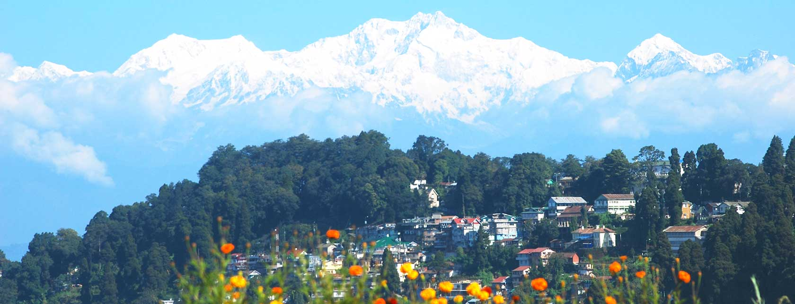

Darjeeling

Darjeeling conjures visions of snow peaks, serenity of vibrant green hills steeped in splendour, a land of breathtaking beauty crowned by the majestic Himalayas. Darjeeling is one of the most magnificent hill resorts in the world. This heavenly retreat is bathed in hues of every shade. Flaming red rhododendrons, sparkling white magnolias, miles of undulating hillsides covered with emerald green tea bushes, the exotic forests of silver fir - all under the blanket of a brilliant azure sky dappled with specks of clouds, compellingly confounds Darjeeling as the QUEEN OF HILL STATIONS. The crest of Kanchenjunga shining in the first dawn light truly supports the title.

HOW TO REACH ?
Nearest Airport:Darjeeling
Nearest Railway Station: Darjeeling
Nearest Bus Stand: Darjeeling